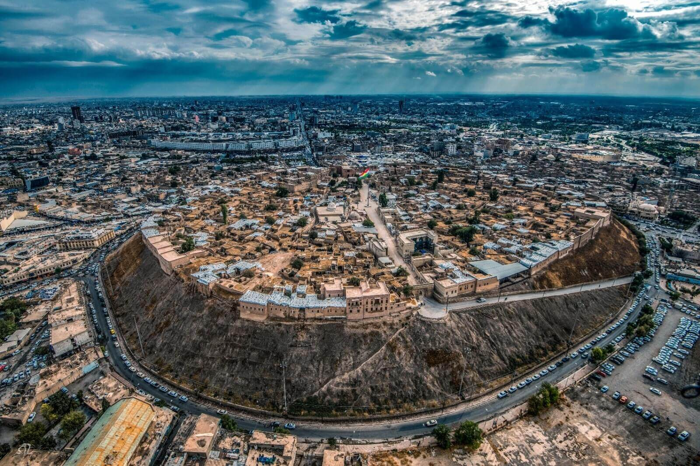

Découvrez Erbil
Erbil, capitale du Kurdistan irakien, est une ville où l’histoire millénaire rencontre la modernité.
La citadelle d’Erbil, inscrite au patrimoine mondial de l’UNESCO,
qui domine la ville depuis plus de 6 000 ans. En se promenant dans ses ruelles,
les visiteur découvrent des musées,
des maisons anciennes et profitent d’une vue panoramique exceptionnelle.

Pourquoi visiter Erbil ?
Erbil est la capitale du Kurdistan d'Irak et l'une des plus anciennes villes du monde encore habitée. Elle mélange parfaitement l'histoire ancienne et la modernité. Au centre se trouve une citadelle vieille de 8000 ans, entourée d'une ville moderne avec des gratte-ciel, des centres commerciaux et des parcs.
Pourquoi visiter Erbil ?
Erbil est une des plus vieilles villes du monde avec 8000 ans d'histoire continue. Sa citadelle historique est classée par l'UNESCO comme patrimoine mondial, ce qui montre son importance pour l'humanité. Aujourd'hui, c'est aussi une ville moderne et dynamique qui grandit rapidement avec de nouveaux bâtiments et quartiers.
En tant que centre politique et culturel du Kurdistan, Erbil rassemble tout ce qui fait la richesse de cette région. La population est très accueillante et aime recevoir les visiteurs du monde entier. La ville offre des restaurants excellents où goûter la cuisine kurde et internationale, ainsi que des hôtels confortables pour tous les budgets.
Erbil est aussi le point de départ parfait pour visiter tout le Kurdistan. Depuis cette capitale, vous pouvez facilement aller voir les autres villes et sites naturels de la région, ce qui en fait une base idéale pour votre voyage.
Que voir à Erbil
La Citadelle d'Erbil
C'est le symbole de la ville et un site du patrimoine mondial de l'UNESCO. La citadelle offre une vue magnifique sur toute la ville. On peut visiter les maisons restaurées et découvrir comment les gens vivaient autrefois.
À voir dans la citadelle :
- Les maisons traditionnelles restaurées
- Le musée du textile kurde
- Les anciennes mosquées
- La vue panoramique sur Erbil
- Les ruelles historiques
Le Grand Bazar (Qaysari)
Un marché traditionnel couvert où on trouve de tout, épices, tapis, bijoux, vêtements, souvenirs. C'est l'endroit parfait pour acheter des cadeaux et goûter aux spécialités locales.
Qu'acheter au bazar :
- Tapis kurdes
- Bijoux traditionnels
- Épices et thés
- Vêtements traditionnels
- Objets en cuivre
Parc Sami Abdulrahman
Le plus grand parc urbain du Moyen-Orient. C'est un endroit parfait pour se promener, faire du sport ou pique-niquer en famille.
Il y a un lac artificiel, des aires de jeux et de beaux jardins.
Musée de la Civilisation Kurde
Un musée moderne qui raconte l'histoire du peuple kurde.
On peut voir des costumes traditionnels, des armes anciennes,
des objets artisanaux et apprendre sur la culture kurde.
Minaret de Mudhafaria
Un beau minaret du 13ème siècle, haut de 36 mètres.
C'est un exemple magnifique de l'architecture islamique de l'époque.
Il est décoré avec de belles briques et des motifs géométriques.
Mosquée Jalil Khayat
La plus grande mosquée du Kurdistan,
construite récemment dans un style moderne mais avec des éléments traditionnels.
Elle peut accueillir 3000 personnes.
Église Sainte-Marie
Une ancienne église chaldéenne qui montre la diversité religieuse d'Erbil.
Elle témoigne de la présence chrétienne ancienne dans la région.
La cuisine d'Erbil
Erbil offre une cuisine variée et délicieuse :
- Masgouf
- Poisson grillé, spécialité irakienne très populaire
- Kubba
- Boulettes de riz et viande dans un bouillon
- Dolma
- Légumes farcis au riz et aux herbes
- Kebab Erbili
- Viande grillée avec des épices locales spéciales
- Klecha
- Pâtisserie sucrée aux dattes, spécialité locale
Erbil moderne
Le développement récent
Ces dernières années, Erbil s'est beaucoup développée.
De nouveaux quartiers modernes ont été construits avec des gratte-ciel,
des centres commerciaux et des résidences de luxe.
Les quartiers modernes
- Dream City : Nouveau quartier résidentiel
- English Village : Quartier de style européen
- Italian Village : Résidences de luxe
Shopping
- Majidi Mall : Grand centre commercial moderne
- Family Mall : Shopping et divertissement familial
Restaurants et hôtels
Erbil a des restaurants de cuisine internationale et des hôtels de luxe :
- Hôtels 5 étoiles internationaux
- Restaurants italiens, chinois, indiens
- Cafés modernes style occidental
- Restaurants de fast-food
Conseils pratiques pour Erbil
Se déplacer dans la ville
- Taxi : Nombreux et pas chers
- Location de voiture : Plusieurs agences disponibles
- Bus urbains : Lignes principales de la ville
- À pied : Centre-ville accessible à pied
Quand visiter
- Printemps (mars-mai) : Temps parfait, fleurs en bloom
- Automne (octobre-novembre) : Température agréable
- Hiver (décembre-février) : Frais mais ensoleillé
- Été (juin-septembre) : Chaud mais gérable
Conseils utiles
- Les gens parlent kurde, arabe et souvent anglais
- La monnaie est le dinar irakien
- Les cartes de crédit ne sont pas acceptées dans les magasins
- Respectez les coutumes locales, surtout dans les lieux religieux
- Négociez les prix dans les bazars
- Goûtez absolument la cuisine locale
- Les vendredis, certains magasins ferment pour la prière
Souvenirs à rapporter
- Tapis kurdes authentiques
- Bijoux traditionnels en or ou argent
- Épices et thés locaux
- Objets en cuivre gravé
- Vêtements traditionnels kurdes
- Livres sur l'histoire du Kurdistan
Pour en savoir plus sur Erbil